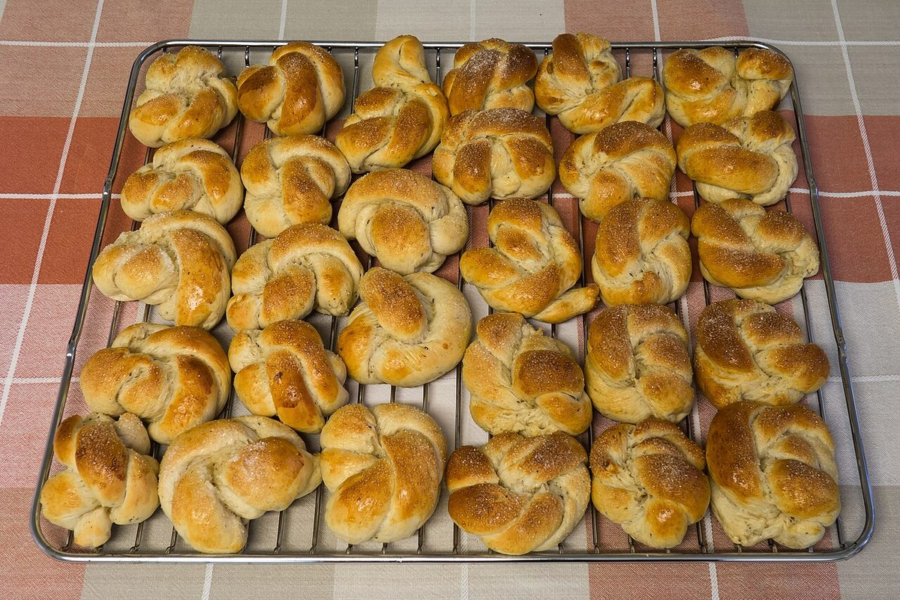

制作側の連想
ハンディ扇風機の充電台を、配置図にしてみる
このサイトは、手に持つ小さな扇風機を立てて充電する台を図にしてみました。六つの部位に番号をふり、上の図と並べています。制作側の連想で、お店の理念・由来とは無関係です。実際の機種の仕様を示すものでもありません。
凡例
六つの部位
- 1ファンヘッド羽根と丸い枠が並ぶ、風を出す円盤の部分。
- 2グリップ手に持つための、細長い柄の部分。
- 3充電端子柄の底にある、台とつながる金属の接点。
- 4受け台柄を立てて差し込む、くぼみのある台の上部。
- 5ケーブル台に電気を運ぶ、細い線。
- 6ランプ台の手前にある、小さな丸い表示灯。
ギャラリー(イメージ)
パンとコーヒー豆の写真


写真はパンとコーヒー豆のイメージです。お店のものではなく、お店で提供している商品を示すものでもありません。
ご案内
お店のこと(確認できたものだけ)
| 所在地 | 〒638-0321 奈良県吉野郡天川村坪内3 |
|---|---|
| 電話 | 準備中 |
| 営業時間 | 準備中 |
| 定休日 | 準備中 |
| ご予約 | 準備中 |
| 駐車場 | 準備中 |
| SNS | Instagram @organic.cafe.naya |